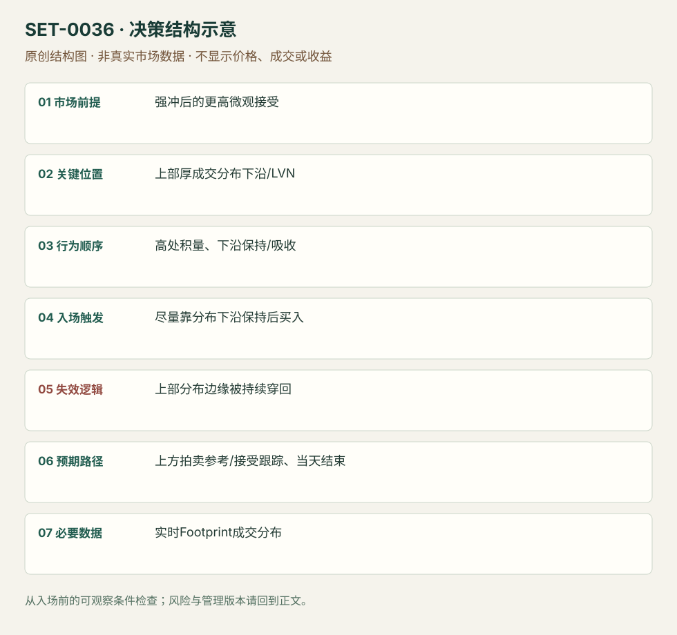

Footprint P 形上分布边缘保持
Footprint Micro P-shape Distribution Hold · SET-0036 · reviewed · v1.0.0
盈利证据：not_established。审查范围与来源版本见第13节；未知字段保留缺失原因。
1. 名称与快速概览
一次强冲后，Footprint 在高处形成厚成交块，下方保留薄量连接；在上部成交分布下沿被保持时顺强冲方向执行。P形只是开始观察的结构，不是看到字母轮廓就买。
记录口径：PA supporting；必要数据 footprint、volume_at_price、OHLC。名称性质：编辑性描述名，英文保留来源术语以便检索。reviewed 只表示本条规则与证据记录审查通过，盈利状态为 not_established。
2. 本质与行为假说
假说是冲击后市场在更高区域接受价格，旧低区成为薄连接。上部厚量表示成交集中，不等于所有成交都是新多头；原文短空回补动机属于解释。
3. 适用市场与环境
来源为微观期货结构，必须有强冲与高处新成交块；若高处只是一根尖峰且没有接受，或不断向下填厚，则不成立。
来源实用市场：期货（P形案例未核对具体合约）。
Session：源图仅为微观片段，完整session未知。本库日内版本限定当次计划session内，结束前平；不把缺失时区默认为纽约。
跨市场：本版不主张已经验证的跨市场迁移；更换市场必须重定数据来源、流动性与session。
4. 出现前的观察清单
固定聚合规则和买卖方向，标高处分布下沿/LVN、主冲低点及较大Profile阻力。不能用整天累积后的P形回标早期交易。
5. 形成过程与状态转换
强冲 → 上方成交聚集 → 下方薄量边界形成 → 回靠上部下沿出现保持/吸收 → 买入恢复 → 高价接受或向下破坏。
6. Entry trigger 与执行方式
来源尽量靠上部分布底/LVN执行，观察量开始被吸收且价能保持。主动恢复或边缘限价分开记，未成交限价不能按理想边缘假设盈利。
7. Invalidation 与止损逻辑
上部厚量下沿外；低量连接被持续穿回并向下接受时假说撤销。不能把P形整条长柱最底做无限宽保护。缓冲依产品tick与样本测试。
8. Exit、target 与 trade management
上方已知拍卖参考，或新分布保持就跟踪；高处吸收不断但不推进需重新评估。退出规则部分为编辑结构模块，来源主要强调入口和止损而未统一利润点。
9. 常见 variations
下冲后的下部分布对称；Footprint时间/成交/反转棒是聚合版本。完整session P形与微观P形不同尺度，不能自动继承效果。
10. 失败方式与不交易条件
没有实际新接受；图形认字取代量的时间顺序；越界后把止损移至主冲低点；仅凭颜色认定机构买入；聚合窗口改变结果。
11. 与相近 setups 的区别
12. 图表与案例解读
已看P形Footprint片段，能够辨认强冲、上部厚成交和下沿。具体合约、完整日期和聚合周期未清楚，不能以相邻Bonds段落替本图补品种。
- [VIS-000039] Strategy 1: Footprint P Shape Fade Long With Highlighted P Shape；定位：Strategy1 P Shape Fade Long With Highlighted P Shape。作者红圈勾出高处成交块，绿色箭头示其下沿；原图模糊，不抄录不可辨认数量。 验证：chart_viewed。

本地原创示意（VIS-000093，非真实市场数据）：

小屏阅读可打开原尺寸示意图并缩放。

此图用于对照识别顺序与风险定义；不计入真实案例覆盖率。
视觉材料元数据与查看范围
- VIS-000039 · real_source_chart / pattern_fragment / chart_viewed
品种：未知/不适用；日期：未知/不适用；周期：未知/不适用；时区：未知/不适用
品种未在图中核对；日期未在图中核对；周期未在图中核对；时区未在图中核对；来源图表不是成交审计 - VIS-000093 · synthetic_structure_diagram / illustration_only / generated_not_market_evidence
品种：未知/不适用；日期：未知/不适用；周期：未知/不适用；时区：未知/不适用
无真实品种、日期或价格：这是结构示意
13. 证据、分歧与未知项
完整微P操作主要由Axia给出，ATAS只独立澄清工具和局限，独立核心佐证有限。原图不清楚日期/品种，保留缺失字段。
- [EVD-000072] Axia Futures，《Footprint Strategies You Can Apply In Your Trading》，SRC-0012；定位：Strategy1 Micro Double Distribution / P Shape Fade Long。支持：强上冲后微观P形上部积累成交，靠上部成交块下沿/LVN买，止损置边缘下方。
- [EVD-000073] ATAS Team，《Everything you need to know about Volume profile types》，SRC-0065；定位：TPO versus Volume Profile / balance-trend-balance。支持：独立数据工具解释澄清时间与成交分布不同，并明确Profile本身不是机械交易系统。
审查边界：来源份数与独立核心核验分开；当前类别为 independent_context_only。正文中的概念、官方事实、衍生解说或同族资料只按其支持范围使用。
14. 可用于复盘的检查表
- ☐ 下单前的前提可核对：强冲后的更高微观接受
- ☐ 事前标记位置：上部厚成交分布下沿/LVN
- ☐ 行为按顺序出现：高处积量、下沿保持/吸收
- ☐ 实际触发符合选定版本：尽量靠分布下沿保持后买入
- ☐ 事先写明本次否定条件：上部分布边缘被持续穿回
- ☐ 目标/路径只用当时已知信息：上方拍卖参考/接受跟踪、当天结束
- ☐ 数据满足 实时Footprint成交分布；记录时间、点差、滑点、队列和未成交
- ☐ 记录截止平仓及规则偏离；正常亏损不事后改成“未成立”
15. 后续验证问题
新分布至少需多少时间/成交才成立？限价未成交概率和队列成本？与普通旗形在同一价格图上的差异是否有边际信息？
双向相关导航
- SET-0041 阶梯跳价后低量区保持的延续 0041 必须阶梯跳过薄量区且反向流少，本条先形成厚的新接受块并靠其边缘执行。
- SET-0042 堆叠对角失衡区的保持与再推进 0042 以连续对角失衡区为参考，本条只需要成交分布结构，不必须堆叠失衡。